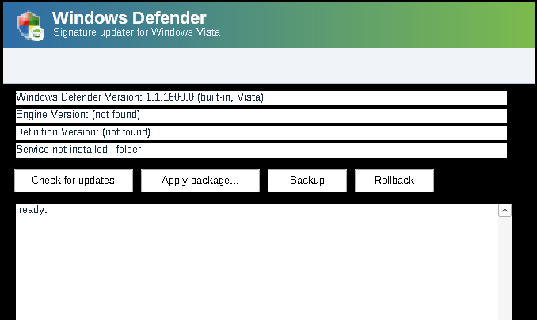

A fully updated Vista carries Defender engine 1.1.17020.2 and already runs definition
generation 1.315 (~2020) — proof its vdm format tolerates generations years newer than the engine build.
v2 tries the freshest packages safely and rolls back the moment the engine disagrees.
Only mpasbase.vdm + mpasdlta.vdm are applied — exactly what the built-in Defender consumes. The engine binary is never replaced.
New Definition Updates\{GUID} folder + registry pointer flip + service restart — the same dance Windows Update does natively.
Freshest source first (today's 1.459) → older eras. Service dies after the swap? Auto-rollback and the next source is tried.
A port of libmspack's LZX decoder unpacks engine-era packages byte-for-byte (verified against cabextract on 2016/2018/2019/2026 packages).
mingw, static CRT, PE minOS 6.00 stamped by the linker and verified in CI. No Go/.NET/VC runtime on the target.
Transcoding 2026 definitions into the 2015 vdm format = reversing two undocumented MMPC databases. The measured matrix + safe ladder is the engineering answer.

Same banner, same colors, same idea: press Check for updates and the ladder runs with health checks and auto-rollback. The CLI shares the exact same engine.
# on the Vista box — what do we have? vdu status # the ladder: freshest package → health-check → auto-rollback → next vdu update -dry-run vdu update # on a modern PC (TLS 1.2): prepare a package for USB transfer vdu fetch vista-x86-2019 -out E:\vdu # on the Vista box — apply a carried package vdu apply -package E:\vdu\extracted vdu backup vdu rollback
| Source | Package engine | mpas generation | Era |
|---|---|---|---|
current (fwlink 121721) | 1.1.26080.3 | 1.459.497.0 | 2026 — today's Win11 stream |
vista-x86-2019 | 1.2.1009.0 | 1.305.416.0 | Oct 2019, tagged "for Windows Vista x86" |
win7-x86-2018 | 1.2.1009.0 | 1.283.1902.0 | Dec 2018 |
xp-2016 | 1.2.1003.0 | 1.225.2438.0 | Apr 2016 |
| your Vista (stock) | 1.1.17020.2 | 1.315.1121.0 installed | ~2020 — runs fine on this engine |
All packages share one container (PE → .rsrc → CAB → stored/LZX folders). The C extractor reproduces every file byte-for-byte (cabextract cross-check).
vdu rollback), but you are experimenting — that is what the
health-checked ladder is for. Microsoft's CDN requires TLS 1.2, which Vista's schannel lacks:
use fetch on a modern PC and carry the folder over.